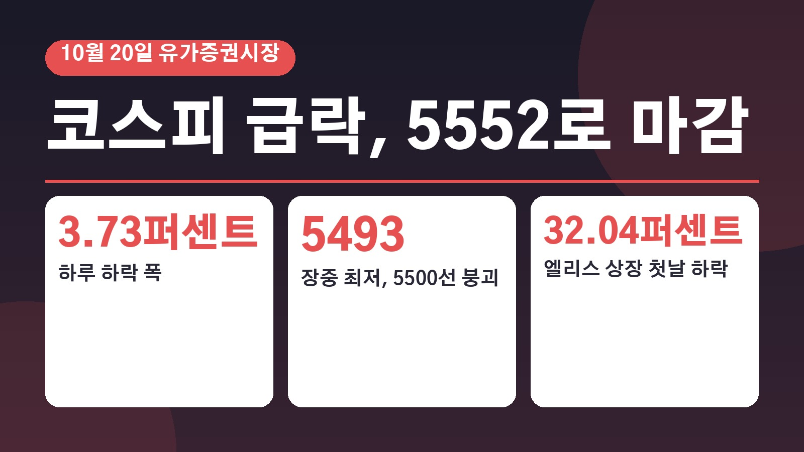
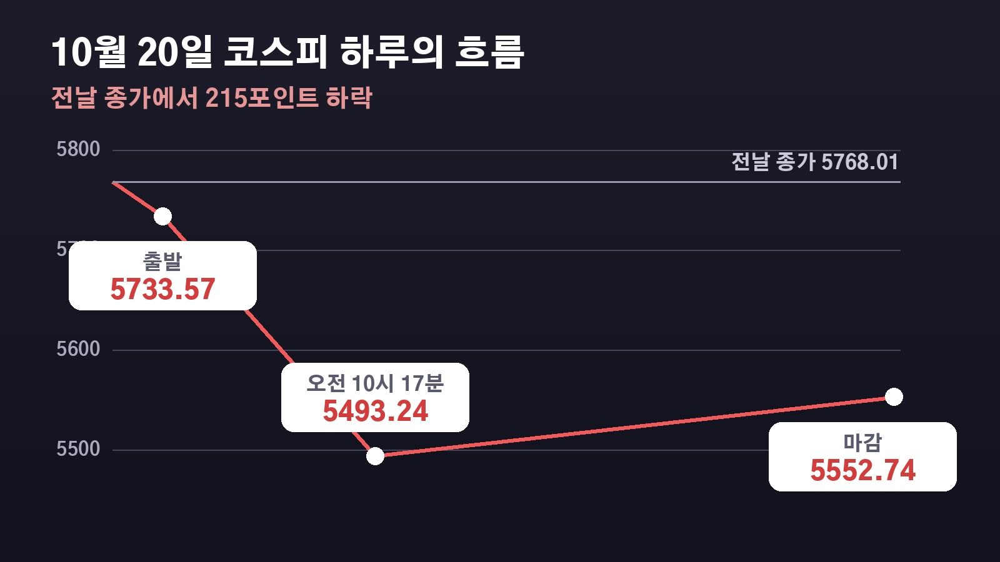

코스피 3.73퍼센트 급락해 5552로 마감, 미국 기술주가 올랐는데도 무너진 이유는 코어위브 신용 우려와 엘리스 상장 첫날 폭락

전날 밤 미국 반도체주가 반등했다는 소식에 이번엔 좀 오르겠지 하고 계좌를 여셨다가 당황하신 분들 많으셨을 거예요. 20일 코스피는 오히려 3퍼센트 넘게 빠지면서 한때 5500선 아래까지 내려갔습니다. 무엇이 시장을 끌어내렸는지, 21일 오늘과 내일 사이 어떤 일정이 남아 있는지 기사에 나온 내용만 추려서 정리해 볼게요.
20일 코스피, 215포인트 내린 5552.74
20일 코스피는 전날보다 215.27포인트, 3.73퍼센트 내린 5552.74로 장을 마쳤어요. 0.60퍼센트 내린 5733.57로 출발해 낙폭을 빠르게 키웠고, 오전 10시 17분쯤에는 5493.24까지 떨어져 한때 5500선이 깨졌습니다.
대형주가 대부분 내렸어요. SK하이닉스는 4.23퍼센트, 삼성전자는 2.98퍼센트 떨어졌고 현대차는 4.91퍼센트, 기아는 3.10퍼센트 내렸습니다. 미국 필라델피아 반도체 지수가 9거래일 만에 반등했는데도 그 온기가 우리 증시로 이어지지 못한 거예요.
정규장 마감 기준으로 유가증권시장에서 외국인은 5333억 원, 기관은 1조48억 원을 순매도했어요. 연기금을 포함한 기관까지 함께 팔면서 지수를 강하게 끌어내렸습니다. 반면 개인은 8982억 원을 순매수했어요.
눈여겨볼 대목도 있어요. 외국인은 16일부터 삼성전자를 사들이기 시작해 19일 2708억 원, 20일 3835억 원으로 사흘 연속 순매수 규모를 키웠습니다. 반면 SK하이닉스는 계속 팔고 있어요. 반도체 전체를 한꺼번에 던졌다기보다 종목별로 비중을 조정하고 있을 가능성이 있다는 분석이 나왔습니다.
코어위브에서 시작된 AI 수익성 의심
이번 하락의 중심에는 미국 AI 클라우드 기업 코어위브가 있어요. 코어위브는 엔비디아의 투자를 받는 회사로, 엔비디아 반도체를 대거 사들여 AI 기업들에 클라우드 서비스를 제공하며 돈을 법니다. 엔비디아에서 받은 돈이 다시 엔비디아 매출로 돌아가는 순환 구조인데, 이 구조가 계속 갈 수 있느냐는 의심이 커지면서 회사채 금리가 크게 오르고 주가는 일주일 새 25퍼센트 넘게 빠졌어요.

여기에 미국 국채금리가 다시 오르며 AI 인프라 투자에 필요한 돈을 마련하기 어려워질 수 있다는 걱정이 커졌습니다. 프랑스 시위 격화와 국제유가 상승, 중동에서 예멘 후티 반군이 사우디아라비아 석유시설을 겨냥해 대규모 공격을 벌인 일도 악재로 꼽혔어요. 안전한 자산을 찾는 심리가 강해지면서 외국인과 기관이 물량을 쏟아낸 겁니다.
엘리스 상장 첫날 32퍼센트 폭락이 던진 신호
국내에서는 AI 기업 엘리스가 코스닥 상장 첫날 공모가 9만500원보다 32.04퍼센트 떨어진 것도 투자심리를 식혔어요. 엘리스는 국내에서 코어위브와 가장 비슷한 클라우드 기업으로 평가받아 왔기 때문에, AI 인프라 기업의 몸값을 가늠하는 시험대로 여겨졌습니다.
미래에셋증권 서상영 상무는 엘리스가 코어위브와 달리 재무 부담이 크지 않은데도 급락했다는 점에서, 빚 문제보다는 AI 인프라 사업 전반의 높은 기업가치와 앞으로의 현금 흐름을 더 깐깐하게 따지기 시작했다는 뜻으로 봤어요. 블룸버그와 로이터 같은 외신도 엘리스 폭락을 AI 지출에 대한 우려를 키운 사건으로 다뤘습니다.
21일과 22일, 시장이 지켜보는 일정
간밤 뉴욕증시는 다우지수가 1.02퍼센트, S&P500 지수가 0.28퍼센트 올랐고 나스닥은 0.02퍼센트 내리며 엇갈렸어요. 장 초반 6퍼센트 넘게 빠졌던 코어위브는 1.65퍼센트 오르며 마감했고, 코스피200 야간선물은 1.84퍼센트 올랐습니다.
21일 국내 증시는 단기간 급락에 따른 반발 매수와 관망 심리가 섞일 것으로 보여요. 21일 오후 6시에는 엔비디아 젠슨 황 최고경영자의 기조연설이, 22일 새벽에는 메타의 실적 발표가 예정돼 있습니다. SK하이닉스의 40조 원 규모 자사주 매입과 소각도 이번 주에 마무리될 것으로 보이고, 투자자들이 증권사에 맡겨 둔 예탁금은 92조 원대까지 줄어 9개월 만에 가장 낮은 수준이 됐어요. 신한투자증권 강진혁 연구원은 이제부터는 AI 기업들이 설비투자를 실제 수익으로 연결하는지, 남는 현금 여력이 있는지, 차입 의존도가 높은 기업의 실적이 어떤지를 함께 봐야 한다고 짚었습니다.
참고한 기사: 연합뉴스 마켓뷰 메타 실적발표 앞두고 뉴욕증시 혼조 마감 코스피 향방은 2026년 10월 21일, KBS 뉴스 AI 순환투자 우려에 코스피 휘청 5500선도 위협 2026년 10월 21일, 한국경제 미국 기술주 올랐는데 속절없이 무너졌다 코스피 폭락한 이유 2026년 10월 20일
태그
코스피급락 코스피5500 코어위브 엘리스상장 AI순환투자 외국인순매도 SK하이닉스 삼성전자 메타실적 젠슨황GTC